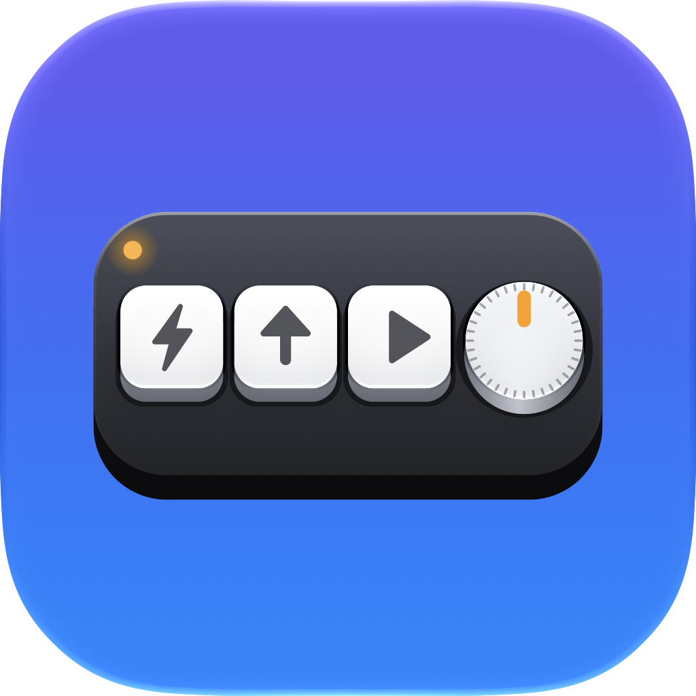

TinyDeck
TinyDeckPress kit
TinyDeck is a native Mac app that programs inexpensive USB macro pads (“mini keyboards”) without Windows.

Fact sheet
| Name | TinyDeck: Macro Pad & Knob |
|---|---|
| Platform | macOS 15 or later · Apple silicon & Intel |
| Price | Free on the Mac App Store |
| Version | 26.11.0 (November 2026) |
| Privacy | No data collected · Sandboxed |
| Website | amitsamant.dev/tinydeck |
One-liner
Your $10 macro pad, finally at home on a Mac: program every key and knob in a 3D editor. No Windows needed.
Description
Millions of inexpensive USB macro pads ship with Windows-only setup software. TinyDeck programs them directly over USB: shortcuts, media keys, mouse actions, knob presets, layers and RGB lighting, all in a 3D editor that mirrors the real pad. The setup is stored on the pad itself, so it works everywhere with no background app.
App icon
Default


Please don't alter the icon or crop it to a different shape.
Contact
Press enquiries: GitHub issues.